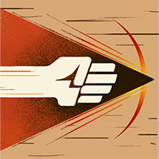
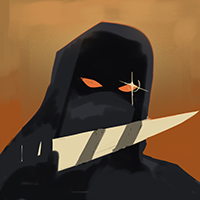

| Dynamo was a scientist who's body got eviscerated in a freak magical accident and hopes to get his body back. Now he pilots around a mechanical body using abilities with areas of effect to help teammates and hinder enemies. His attacks serve to slow down combat and protect others | ||||
| Dynamo's Skillset | ||||
| Kinetic Pulse | ||||
| Dynamo releases an energy pulse that knocks enemies up into the air, dealing damage in a cone in front of him. It's his bread-and-butter ability — used for clear smaller enemy waves, poking enemies in lane, and setting up follow-up damage. At upgrade one it applies a movement and fire rate slow to anyone hit, making it particularly punishing against gun-heavy heroes. Upgrade two adds bonus bullet damage against hit targets IconEra, turning a knockup into a full vulnerability window for your team to exploit. The range on this goes further than most players expect — worth testing in Sandbox before your first match. | ||||
| These Items are especially good for Dynamo and synergize with Kinetic Pulse: | ||||
 |
||||
| Quantum Entanglement | ||||
| Dynamo briefly phases into the void, reappearing a short distance away with his weapon fully reloaded and a temporary fire rate bonus. He can also use this to bring nearby allies with him, granting them half the fire rate bonus. On the surface it looks like a simple dash, but the utility is massive — it can reposition teammates out of danger, bait enemies into bad engages, and keep Dynamo's ammo topped up for sustained duels. At higher upgrades, it gains extended range and stronger buffs on reappearance, making it effective for both offensive and defensive play. | ||||
| These items work with Quantum Entanglement to capitalize on the better positioning on can attain: | ||||
 |
||||
| Rejuvenating Aurora | ||||
| Dynamo channels an aurora that restores health per second to himself and nearby allies within a radius around him. Steam It's one of the strongest heals in the game — but it requires him to stand still and channel, which makes positioning everything. At max upgrade, the movement and ability restrictions are removed entirely, allowing Dynamo to move, shoot, and use other abilities while channeling. It also gains a percentage-based heal on top of the flat restoration, making it scale well into the late game. Corsair In a teamfight, a perfectly placed Aurora can completely negate the enemy team's burst. | ||||
| These items work with Rejuvenating Aurora to capitalize on the better positioning: | ||||
| Singularity | ||||
| Singularity pulls enemies into a black hole and holds them in place for several seconds. It's widely considered one of the most impactful ultimates in the game — a well-timed cast can lock down an entire enemy team and hand your teammates a free fight. At full upgrade it can hold enemies for nearly six seconds in a radius large enough to capture an entire lane. The catch? Dynamo remains vulnerable while channeling it, and it can be canceled by CC abilities and items like Knockdown and Curse, so timing and positioning are everything. One good Singularity can flip a losing game entirely. | ||||
| These items work with Singularity to capitalize on the better positioning: | ||||